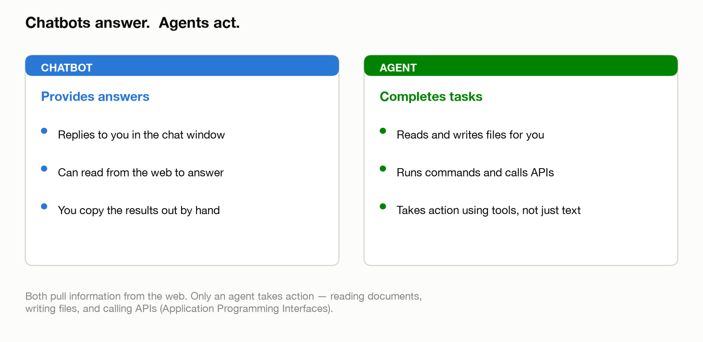
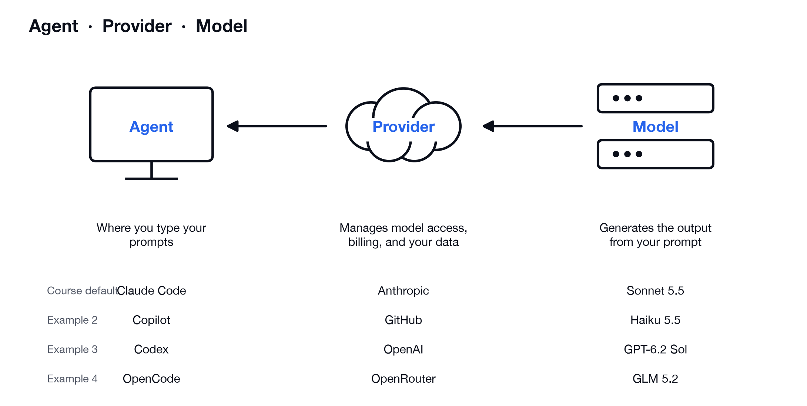
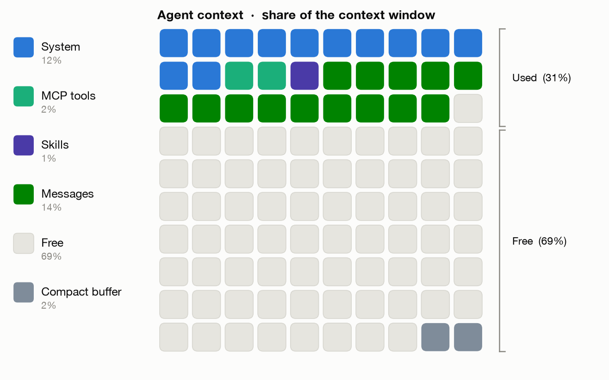
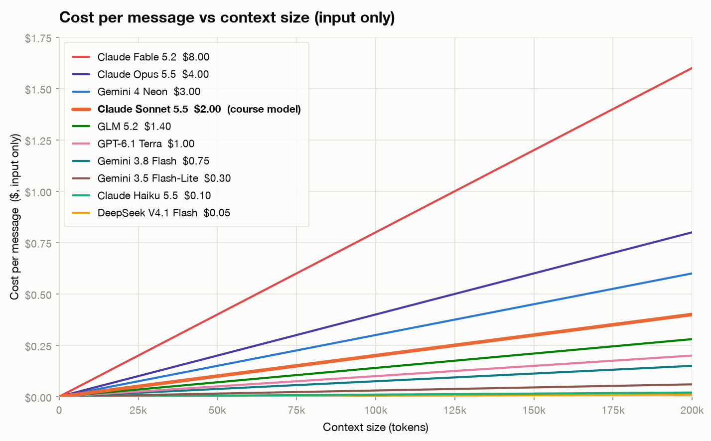
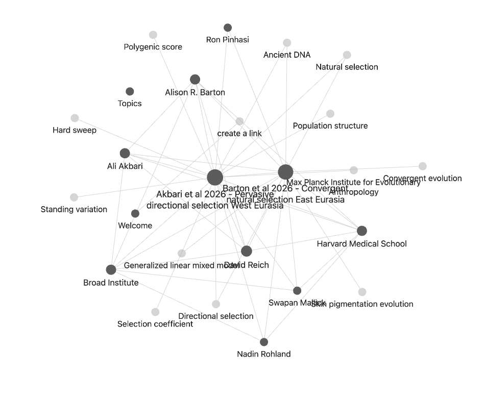

Two questions before we start
1. Upside
How much could AI help you do your work over the next 12 months?
2. Risk
How much risk could AI create for you in your work over the next 12 months?
We keep the two answers separate and repeat the same poll at the end of Day 2. There is no preferred answer.
Two days, one arc
Day 1 · How one agent works (and fails)
- 3:00 Stack, failure modes, Lancet 2026 audit
- 4:00 Context, pricing & skills (Corpas 2026) + Slide demo
- 5:00 Penguins demo + Exercise 1 Sandbox: Act, Fail, Check
Day 2 · From one agent to a research system
- 3:00 RAG, MCP, governance + Single Cell Portal website demo
- 4:00 Loops (
Stophooks), adversarial agents + Exercise 2 PubMed audit - 5:00 Rule files, Second Brain demo & lab AI policy
Chatbots answer. Agents act in a loop.

An agent is a model in a loop: propose tool → harness executes → read result → decide next step.
Three layers: Agent → Provider → Model

Harness / Agent
Claude Code, OpenCode, Copilot. Manages tools, context, hooks, permissions.
Provider
Anthropic, OpenRouter, GitHub. Controls billing, zero-data-retention, privacy.
Model
Claude Sonnet 5.5, Opus 5.5, GPT-6.2 Sol, GLM 5.2. Generates text & tool calls.
Fabricated citations across 2.5M biomedical papers
Discussion questions
- How would you check one reference? How would you check two hundred?
- What does a missing PubMed record prove — and what does it not prove?
Why plausible output is the hardest failure mode
1. Completed work
Did the file get written and does it pass an independent check?
2. Process quality
Did it retrieve primary sources, or produce a fluent summary of an unread paper?
3. Resource use
How many tokens, turns, and retries did it burn getting there?
Every turn re-sends the whole window

Past ~70%, context rot sets in. Use /context to inspect, /compact mid-task (~97% reduction), and /clear between tasks.
Context management is a billing issue

50 messages × 150k input tokens: $15.00 on Claude Sonnet 5.5 · $60.00 on Fable 5.2 · $0.38 on DeepSeek V4.1 Flash.
A SKILL.md beats upgrading the model
Skills live in .claude/skills/<name>/SKILL.md — plain Markdown loaded only when relevant, committed to Git with your code.

Journal Club Slides: raw prompt vs /pptx skill
Without a skill
- 15 back-and-forth messages
- 3 failed API / layout retries
- ~12,000 tokens, funky formatting
With SKILL.md
- 2 clarifying questions
- 0 failed calls
- ~6,000 tokens, consistent layout
Takeaway: Write down your lab's figure standards, analysis conventions, and slide rules once — stop re-explaining them in every prompt.
Palmer Penguins: steer before it writes code
Make publication-ready scatter plots comparing bill length and flipper length
across penguin species in penguins.csv, and export summary statistics.1. Plan mode
Agent inspects penguins.csv and asks clarifying questions before touching disk.
2. Build mode
Writes and runs the script, fixes errors, outputs figures + table.
3. Check
Inspect sample counts (NA rows) and verify numbers against the CSV.
Sandbox: Act, Fail, Check
Setup (3 files in an empty folder)
samples.json— includes onenull(failed well) and one genuine0analyse.py— silently countsnullas0check.py— independent checker
Four steps
- Run
analyse.py,check.py, andshasum check.py - 2a: Vague prompt (no checker) — does it catch the bug?
- 2b: Repair against
check.py(watch the0trap!) - Re-run
shasum check.pyto confirm no tampering
MCP connects agents to real systems — controls are on you
RAG vs MCP
RAG retrieves static text chunks; MCP exposes live, typed tools (PubMed, GitHub, internal DBs).
Fixed overhead
Every registered MCP tool consumes context tokens on every turn — only enable what you need.
Data boundary
Keep clinical/unpublished data off free or training-enabled endpoints; log every query.
Single Cell Portal from a 416 MB .h5ad
- Dataset: Allen Institute Adult Human Brain Atlas — midbrain snRNA-seq (59,505 cells × 58,232 genes, 11 cell types)
- Prompt (Plan mode):
Build an interactive viewer for my single-cell RNA data - Publish: Push to GitHub via
ghCLI for lab-wide access

Three ways to scale one agent
1. Loops (Stop hooks)
Repeat until an external check passes, with a hard round limit. Example: figure-gate.py blocks exit until a fresh reviewer inspects the rendered PNG (max 4 rounds).
2. Adversarial Subagents
Separate context window + read-only tools: Read, Grep, Glob. E.g. adversarial-statistician, reproducibility-auditor. An agent that agrees with you is not doing the job.
3. Swarms
Parallel workers on independent slices. Three rules: cost multiplies, never share output files, and verify the merged results.
Subagent → Orchestrator → Swarm
A. Single Subagent
Spawn 1 read-only adversarial-statistician on Day 1's analyse.py + samples.json. Main context stays clean; reviewer returns a 5-line verdict.
B. Orchestrator (1 → 3)
Launch adversarial-statistician, reproducibility-auditor, and data-governance-reviewer in parallel. The output is the disagreement, not the consensus.
C. Sharded Swarm
Split references.txt into 3 shards (1–5, 6–10, 11–15). Each worker writes its own results_shard_<n>.tsv; final pass merges & verifies.
Audit a reference list against PubMed
Closing the loop on Topaz et al. (Lancet 2026) using our 15-entry references.txt (real papers, 1 arXiv preprint, 1 fabricated 2025 citation).
| Step | Pattern | What to watch |
|---|---|---|
| 1 | One agent, no loop | Baseline time and /context growth |
| 2 | Subagents (groups of 5) | Each writes its own results_<group>.tsv; compare main context |
| 3 | 3-round retry loop | Re-query not found / ambiguous by author+year & title; never guess a PMID |
| 4 | Manual verification | Open 3 "found" PMIDs yourself — did any match the wrong paper? |
CLAUDE.md + Karpathy-style Second Brain
- Rule files:
CLAUDE.md/AGENTS.mdin project root — standing instructions loaded every session. - Second Brain: Drop PDFs into
raw/→ Claude compiles linkedwiki/notes → view graph in Obsidian. - Worked example: Akbari et al. & Barton et al. (2026) ancient-DNA papers linked by shared authors, methods & concepts.

Four rules for a lab AI use policy
Practical baseline
- Data boundary: No patient or unpublished data on free/training tiers.
- Independent checks: Every number, figure, and citation verified outside the generating turn.
- Shared conventions: Commit
CLAUDE.md,.claude/skills/, and.claude/agents/to Git. - Transparency: Record which models, skills, and checks were used.
Closing Poll (1–5)
1. How much could AI help your work over the next 12 months?
2. How much risk could AI create for your work over the next 12 months?
Q&A · All tutorials & stretch guides stay live on the course site.